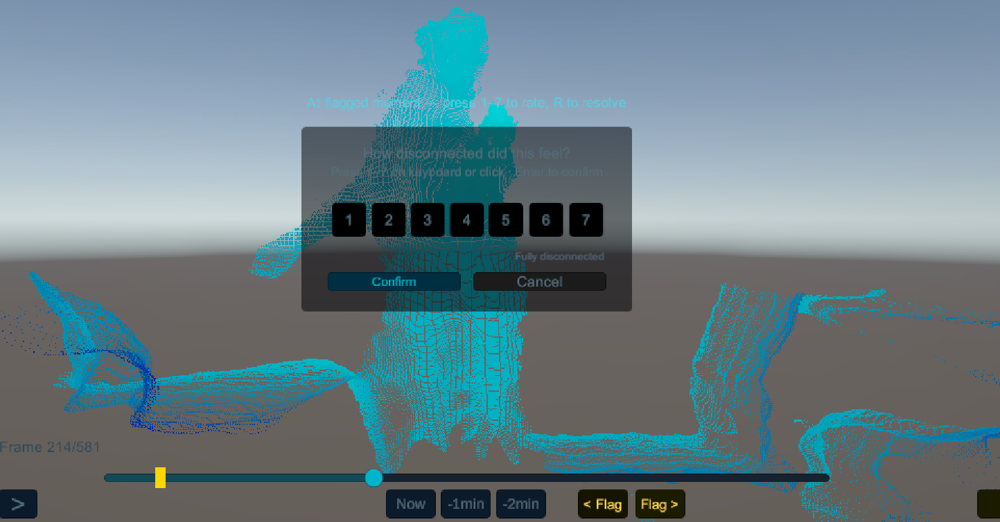
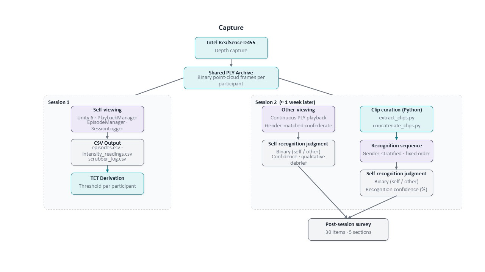
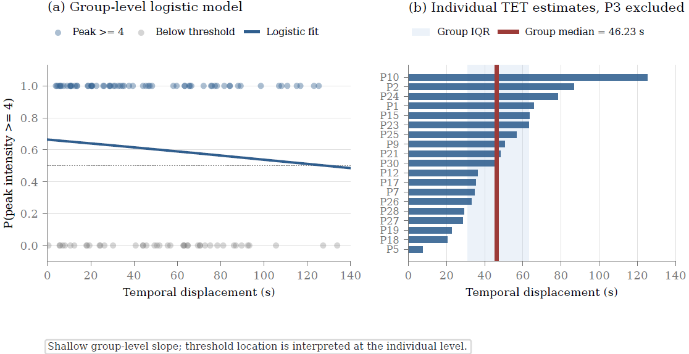

Temporal Embodiment Thresholds
Investigating the temporal boundaries of self-identification through point-cloud re-embodiment.
Overview
When you watch a recording of yourself moving from a few minutes ago, viewed from outside your own body, when does it stop feeling like you? This thesis investigates whether that moment can be measured.
Thirty participants were recorded as point clouds, then immediately watched their own movement replayed in third-person while continuously rating how strongly they identified with the figure on screen. The work asks an old phenomenological question with empirical methods, and arrives at a finding that complicates the question itself.

The question
Research question
Does a measurable temporal embodiment threshold exist, a point in the recent past beyond which one's own movement, viewed in third-person and reduced to a point cloud, ceases to feel self-attributed?
The analysis sought to determine whether such a threshold could be identified at all. The phenomenon, a felt loss of self-identification when re-encountering one's own movement, was the primary object of study. The threshold itself, if it existed, was a secondary measurement.
Why point clouds, third-person, and the proximate past.
Each of the three conditions is doing specific phenomenological work.
Point cloud rendering removes facial features, voice, clothing, and skin tone. What remains is movement pattern, the most direct kinematic signature of a body. Self-identification, if it occurs, is grounded in how one moves rather than how one appears.
Third-person perspective displaces the visual frame. The participant sees their body as another body, from outside.
Temporal displacement of approximately five to twenty minutes places the recording in the proximate past, recent enough to remain in working memory, distant enough that the body has moved on. This is the zone in which memory and present experience compete.
These three conditions compound. Together they create a phenomenological pressure that no single condition produces alone.
Method
Two sessions per participant, separated by a short break.
Session 1. A three-minute movement recording was captured using an Intel RealSense D455 depth camera. The capture was processed offline into a point cloud sequence using a custom HLSL shader in Unity 6.
Session 2. Within approximately ten minutes of recording, the participant watched their own point cloud sequence on screen. They were free to scrub along the timeline, replay segments, and inspect their movement from a third-person viewpoint. While doing so, they reported how strongly they identified with the figure on screen on a 1 to 7 unipolar intensity scale, in continuous ratings tagged to the playback timestamp.
Episodes of identification, or its loss, were classified as either instantaneous (a single rating at a single moment) or sustained (multiple rating rows across a contiguous span of playback). For sustained episodes, both an onset intensity and a peak intensity were recorded.
A second condition asked each participant to identify whether a separate, unfamiliar recording showed themselves or another person. A forced-choice recognition task followed, with confidence ratings.

Findings
A consistent phenomenon, a deeply individual threshold.
Across 30 participants, 205 episodes of identification or its loss were captured, 127 sustained and 78 instantaneous, distributed across 28 of the 30 participants. Of those, 19 participants yielded a valid temporal embodiment threshold estimate after one episode was excluded as a procedural artefact.
IQR 30.98–63.21s

The loss of self-identification was consistent and pervasive within this sample. Almost every participant experienced it. The point at which it occurred, however, was individual. The correlation between a participant's threshold and their recognition confidence was near zero (r = +0.17, p = .497). Some participants disidentified within seconds. Others held on for two minutes. No threshold generalised.
Context
Why this question matters now.
Third-person self-replay has become a routine tool. Athletes review their own footage within minutes of competing. Physical therapists show patients recordings of their own gait. Surgical trainees replay their own procedures. Motor learning researchers use delayed replay to study how observation of oneself drives skill acquisition.
All of these applications share an implicit assumption: that watching yourself is a stable and reliable input channel, and that the self you see on screen is continuous with the self doing the watching. This thesis asks whether that assumption holds, and if so, for how long.
The proximate past, the window between a few seconds and a few minutes ago, is a perceptual category that interaction design has largely ignored. It is too recent to be treated as history and too distant to be treated as the present. This work begins to map its edges.
What it means
The phenomenon is universal. The boundary is yours alone.
The loss of self-identification when re-encountering one's own movement is not rare or pathological. It is something almost every participant in this study experienced, often without prompting, and often with some surprise. The question is not whether the boundary exists but where it sits for any given person.
For phenomenology, the finding provides empirical traction on a question that has long been discussed and rarely measured. The rubber hand illusion and related paradigms have shown that self-attribution is malleable in space. This work suggests it is equally malleable in time.
For interaction design, the takeaway is calibration. A sports analysis tool that replays footage at the two-minute mark will land inside the window for some athletes and outside it for others. A rehabilitation system that times its feedback to an assumed average will mistime it for most patients. The right moment to ask someone to watch themselves is not a constant. It is a parameter the system needs to learn, individually, before it can be useful.
Design implications
Three directions for systems that ask people to watch themselves.
Calibration before instruction. Any system that uses self-replay as a feedback channel should probe for the user's threshold before deploying content at a fixed delay. A short calibration session, similar in structure to the one used here, could establish an individual baseline and let the system adapt its replay timing accordingly.
Continuous rather than snapshot rating. The protocol in this study used a continuous 1 to 7 unipolar intensity scale rather than a single end-of-session rating. The continuous measure revealed dynamics, onset points, and within-session variation, that a snapshot would have flattened. Future systems collecting self-identification data should prefer continuous or high-frequency sampling.
Movement as identity signal, not appearance. The point cloud condition removed all appearance cues and left only kinematics. The fact that 26 of 30 participants still correctly identified their own recording under this condition, at 81% mean confidence, suggests that movement pattern alone is a robust self-identity cue. Systems that anonymise or abstract self-footage for privacy reasons need not sacrifice recognisability if they preserve movement quality.
Limitations
What this study cannot claim.
The sample is small and homogeneous. Thirty participants drawn from undergraduate and graduate programs within the Tokyo area could share similar demographic and educational characteristics that may not generalise. The threshold distribution observed here could look different in a population with different relationships to body image, movement, or screen-mediated self-representation.
Movement type was not controlled. Participants were free to move as they chose during the recording session, which produced a wide range of movement repertoires. This ecological validity is intentional but makes it impossible to isolate whether the threshold is sensitive to movement complexity, familiarity, or expressiveness.
The delay between recording and playback was approximately ten minutes for all participants, held approximately constant to isolate the temporal variable within the playback scrubbing task. How the threshold behaves across longer delays, hours or days, remains an open question.
Finally, the lack of a group-level threshold is itself a finding, but it also limits the generalisability of the median estimate. The 46.23 second figure describes the middle of a very wide distribution. It should not be used as a design constant without individual calibration.
Built with
- Primary supervisor
- Prof. Kai Kunze
- Sub-supervisor / thesis reader
- Prof. Akira Kato
- Ethics representation
- Prof. Matthew Waldman
- Conceptual input
- Dr. Matthias Hoppe
- Ethics protocol
- KMD-2026_E021, approved 19 May 2026. Chair Ryuma Shineha. Data retained until 30 June 2029.